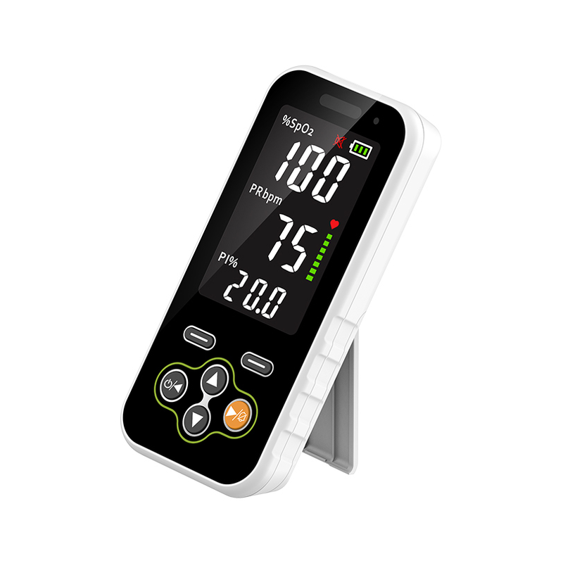

User Manual
Request the English manual for the model and configuration you are evaluating.
Request manual →Compare fingertip and handheld models for your medical device brand or distribution portfolio. Review displays, connectivity options and specifications before discussing your OEM/ODM requirements.


Select a series, then compare display, Bluetooth and buzzer options by model. Review adult or pediatric configurations in the specifications below.
Select a series above to view its models.
| Specification | Details |
|---|
Request files for your selected model, configuration and target market. Document availability and regulatory scope must be confirmed for your project.
Request the English manual for the model and configuration you are evaluating.
Request manual →Ask which CE, FDA or NMPA documents apply to your model and target market.
Request documents →Review the product range and discuss other models for your sourcing project.
View catalog options →Compare the YH01 LED and YH02 TFT displays. Open each model to review battery-life conditions and optional sensors for your project.

Start with the product form and intended users, then select the display and any listed connectivity or sensor options. Share your target market, expected order quantity, branding and packaging requirements so our team can assess the project scope.
For supplier evaluation, explore our manufacturing and quality documentation →
PulseMatrix™ focuses on PI 0.1% low-perfusion, performance under motion conditions and SpO₂ performance across diverse skin pigmentation. Discuss the applicable models, test conditions and supporting information with our team.
Compare the listed options and prepare the information for your project discussion.
Start with the intended users and preferred product design, then compare the display, Bluetooth and buzzer configuration. YM603 is the listed pediatric model; the other listed fingertip models are for adults. Available options vary by model.
Bluetooth is listed as optional for YM212, YM401, YM403, YM501 and YM503. Include your connectivity requirements when discussing the configuration for your selected model.
YH01 has a 3.5-inch LED display; YH02 has a 3.5-inch TFT display. Both list optional RS201 adult finger-sleeve, RS202 adult finger-clip and SS201 adult/pediatric nasal-alar sensors. Review the selected model’s specifications and battery-life conditions when defining your configuration.
Share your preferred model, intended users, target market, display and connectivity requirements, expected quantity, and branding or packaging needs. For a handheld project, include your sensor requirements.
These require a project review based on the selected model, configuration and customization scope. Share your expected quantity and target schedule so our team can discuss the sample plan and production conditions.
Share your preferred model and target market. Include the configuration and customization requirements you would like us to review.